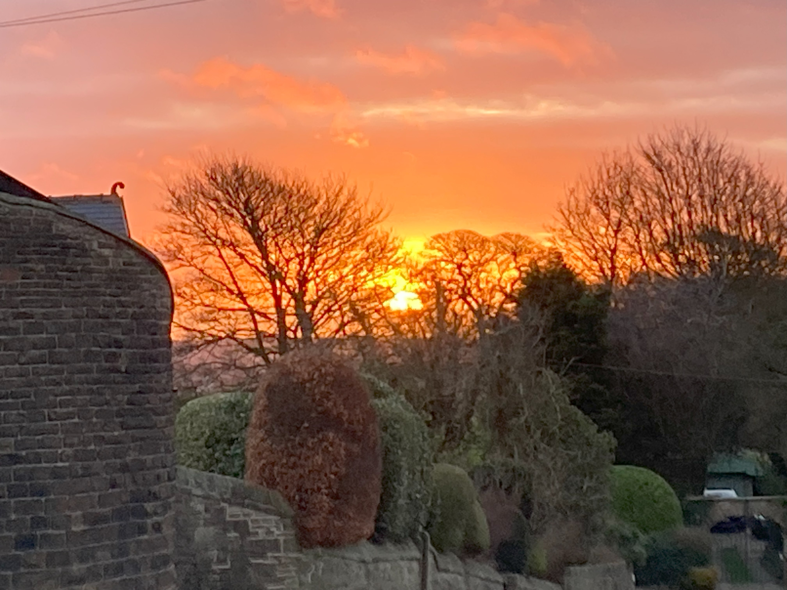

Sheffield, situated in South Yorkshire, is a populous city which was traditionally famous for its steel industry. Even today, the memory of its steel industry persists in its nickname: 'Steel City'.
However, there is much more to Sheffield than steel. Today, Sheffield is known as cultural centre, with theatres, galleries, and sports facilities.
It hosts two soccer teams:
Sheffield Wednesday
(The 'Owls')
(The 'Blades')
It is also home to two outstanding universities:
Sheffield Hallam UniversitySheffield is famous for its beautiful natural environment.
Sunrise over Sheffield:
Some pictures of Sheffield City Centre:
Famous Sheffielders include actor, writer and traveller Michael Palin, gold medal winning Olympic heptathlete Jessica Ennis-Hill, and rock band Def Leppard.